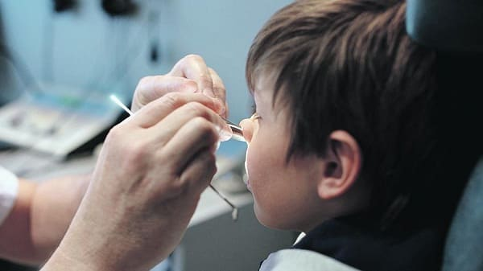
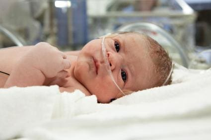
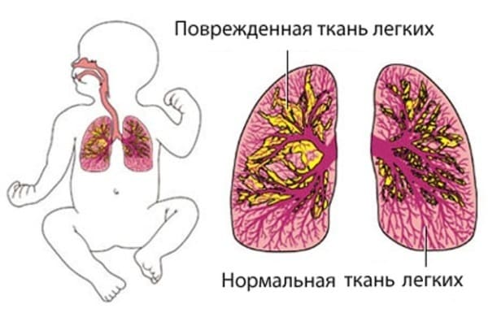

Затруднение дыхания может развиваться у младенцев и детей по множеству причин. Эта ситуация обычно требует врачебного осмотра. Воспользуйтесь нашими советами, чтобы лучше спланировать свои действия.
СИМПТОМЫ
Важно различить, какое именно нарушение дыхание развилось у вашего ребенка. Это поможет сузить круг возможных причин и мероприятий для оказания помощи.
Хрипы. Если у вашего ребенка астма или были приступы бронхоспазма, то вы, вероятно, уже с этим сталкивались. Если вы слышите хрипы только во время вдоха — это хороший признак, означающий, что ситуация не слишком серьезна. Свистящие хрипы обычно не исчезают после кашля в отличие от проводных при безвредном скоплении мокроты, которое родители могут принять за свистящее дыхание и которое исчезает, если ребенок хорошо прокашляется.
Стридор. Этот термин обозначает хриплый скрипучий звук, который возникает, когда ребенок делает вдох. При этом вы можете заметить, что у ребенка сел голос, а кашель громкий, звонкий, напоминает собачий лай.
Втяжения уступчивых мест грудной клетки. Это втягивающиеся во время вдоха участки: брюшная стенка, межреберья, надключичные ямки, нижняя треть грудины. Они означают, что ребенку трудно вдохнуть.
Учащенное дыхание. Если ребенок дышит быстрее обычного (чаще, чем 30—40 дыхательных движений в минуту), это признак того, что организму не хватает кислорода и легким приходится больше работать, чтобы получить его.
Необычное положение ребенка во время дыхания. При этом ребенку, чтобы вдохнуть, приходится помогать себе, двигая плечами. Он поднимает плечи при каждом вдохе или сидит, наклонившись вперед и опираясь руками о что-нибудь, например, о край стола.

СОВЕТ ДОКТОРОВ СИРС: ЛИХОРАДКА И УЧАЩЕННОЕ ДЫХАНИЕ Если дыхание ребенка учащается при повышении температуры тела — это не повод волноваться. Учащение дыхания — нормальная реакция на лихорадку, способ повысить теплоотдачу. Прежде чем волноваться о возможной проблеме в легких, постарайтесь снизить температуру. Если учащенное дыхание сохраняется и при нормальной температуре тела, ищите его причину или вызовите врача. |
НЕОПАСНЫЕ СИМПТОМЫ
Ниже приведены неопасные симптомы.
Заложенность в груди. Если вы слышите рассеянные рокочущие звуки в легких, исчезающие после того, как ребенок хорошенько откашляется, — скорее всего, это безвредное скопление слизи в верхних дыхательных путях, а не настоящие хрипы.
Заложенность носа. Когда у младенца сильно заложен нос, то это выглядит, будто ребенок борется за каждый вдох, и родитель может решить, что проблема в легких. Если ваш младенец сопит при дыхании, попробуйте наши методы очищения носа . Скорее всего, вы получите временное облегчение — пока нос не забьется снова!
Нехватка воздуха или напряжение при кашле. Дети могут издавать массу необычных звуков при кашле или сразу после приступа кашля. Не стоит из-за этого волноваться. Единственное, что важно, — то, как он дышит, когда не кашляет.
ПРИЧИНЫ
Причин, почему у ребенка появляется затрудненное дыхание, кашель, хрипы, множество. Изучите их и решите, какая больше всего соответствует состоянию вашего ребенка.
Приступ астмы. Если у ребенка впервые появились хрипы — возможно, это приступ астмы. При этом вы можете также заметить одышку и втяжения уступчивых мест грудной клетки.
Аллергическая реакция. Может быть на продукты питания (например, садовую землянику), укус насекомого. Аллергические реакции могут быть очень тяжелыми.
Реакция дыхательных путей на ОРВИ (ОРЗ). Расстройство дыхания развивается, когда обычный «простудный» вирус вызывает раздражение тканей легких, становясь спусковым крючком для бронхоспазма. Например, респираторно-синцитиальный вирус — это обычный вирус, вызывающий ОРВИ с насморком у взрослых, но у младенцев может поражать легкие, вызывая насморк, кашель и хрипы. Возможны втяжения межреберий или живота при дыхании.
Ложный круп. Вирусная инфекция, обычно протекающая со стридором, осиплостью голоса и необычным кашлем, напоминающим лай собаки.
Пневмония (воспаление легких). При этом заболевании часто наблюдается учащенное и затрудненное дыхание, даже когда температура тела нормализуется.
Инородное тело в дыхательных путях. Если ваш ребенок задыхается из-за того, что вдохнул какой-либо мелкий предмет, вы можете услышать хриплое или свистящее и, возможно, затрудненное дыхание.

КОГДА ВОЛНОВАТЬСЯ
Здоровье ребенка от докторов Сирс / Сирс У. и др.